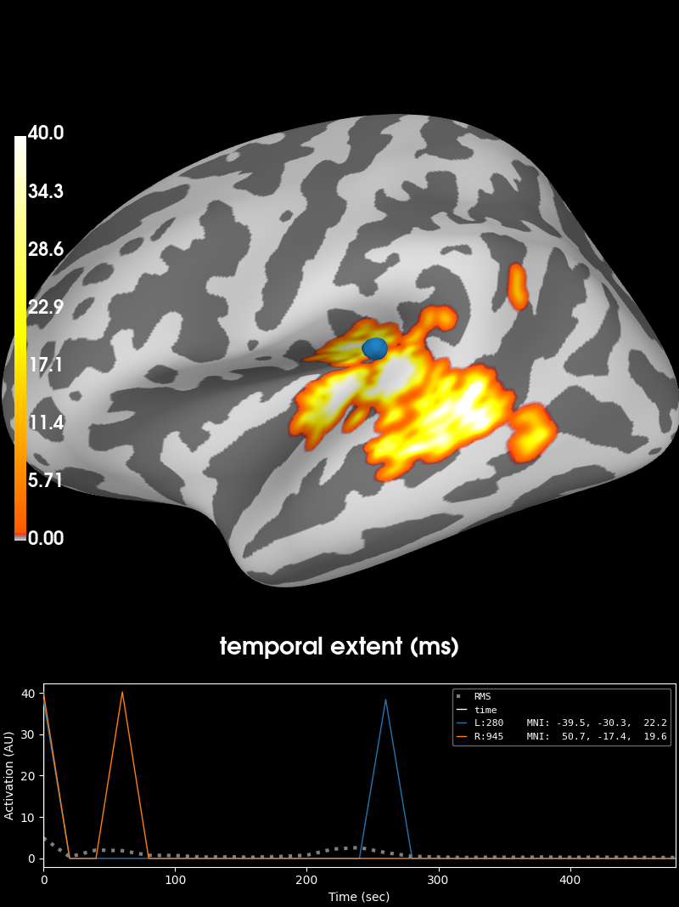

Note
Click here to download the full example code
2 samples permutation test on source data with spatio-temporal clustering¶
Tests if the source space data are significantly different between 2 groups of subjects (simulated here using one subject’s data). The multiple comparisons problem is addressed with a cluster-level permutation test across space and time.
# Authors: Alexandre Gramfort <alexandre.gramfort@inria.fr>
# Eric Larson <larson.eric.d@gmail.com>
# License: BSD (3-clause)
import os.path as op
import numpy as np
from scipy import stats as stats
import mne
from mne import spatial_src_adjacency
from mne.stats import spatio_temporal_cluster_test, summarize_clusters_stc
from mne.datasets import sample
print(__doc__)
Set parameters¶
data_path = sample.data_path()
stc_fname = data_path + '/MEG/sample/sample_audvis-meg-lh.stc'
subjects_dir = data_path + '/subjects'
src_fname = subjects_dir + '/fsaverage/bem/fsaverage-ico-5-src.fif'
# Load stc to in common cortical space (fsaverage)
stc = mne.read_source_estimate(stc_fname)
stc.resample(50, npad='auto')
# Read the source space we are morphing to
src = mne.read_source_spaces(src_fname)
fsave_vertices = [s['vertno'] for s in src]
morph = mne.compute_source_morph(stc, 'sample', 'fsaverage',
spacing=fsave_vertices, smooth=20,
subjects_dir=subjects_dir)
stc = morph.apply(stc)
n_vertices_fsave, n_times = stc.data.shape
tstep = stc.tstep * 1000 # convert to milliseconds
n_subjects1, n_subjects2 = 7, 9
print('Simulating data for %d and %d subjects.' % (n_subjects1, n_subjects2))
# Let's make sure our results replicate, so set the seed.
np.random.seed(0)
X1 = np.random.randn(n_vertices_fsave, n_times, n_subjects1) * 10
X2 = np.random.randn(n_vertices_fsave, n_times, n_subjects2) * 10
X1[:, :, :] += stc.data[:, :, np.newaxis]
# make the activity bigger for the second set of subjects
X2[:, :, :] += 3 * stc.data[:, :, np.newaxis]
# We want to compare the overall activity levels for each subject
X1 = np.abs(X1) # only magnitude
X2 = np.abs(X2) # only magnitude
Out:
Reading a source space...
[done]
Reading a source space...
[done]
2 source spaces read
Simulating data for 7 and 9 subjects.
Compute statistic¶
To use an algorithm optimized for spatio-temporal clustering, we just pass the spatial adjacency matrix (instead of spatio-temporal)
print('Computing adjacency.')
adjacency = spatial_src_adjacency(src)
# Note that X needs to be a list of multi-dimensional array of shape
# samples (subjects_k) x time x space, so we permute dimensions
X1 = np.transpose(X1, [2, 1, 0])
X2 = np.transpose(X2, [2, 1, 0])
X = [X1, X2]
# Now let's actually do the clustering. This can take a long time...
# Here we set the threshold quite high to reduce computation.
p_threshold = 0.0001
f_threshold = stats.distributions.f.ppf(1. - p_threshold / 2.,
n_subjects1 - 1, n_subjects2 - 1)
print('Clustering.')
T_obs, clusters, cluster_p_values, H0 = clu =\
spatio_temporal_cluster_test(X, adjacency=adjacency, n_jobs=1,
threshold=f_threshold, buffer_size=None)
# Now select the clusters that are sig. at p < 0.05 (note that this value
# is multiple-comparisons corrected).
good_cluster_inds = np.where(cluster_p_values < 0.05)[0]
Out:
Computing adjacency.
-- number of adjacent vertices : 20484
Clustering.
stat_fun(H1): min=0.000000 max=293.441888
Running initial clustering
Found 234 clusters
Permuting 1023 times...
0%| | : 0/1023 [00:00<?, ?it/s]
0%| | : 1/1023 [00:00<01:09, 14.75it/s]
0%| | : 3/1023 [00:00<00:34, 29.98it/s]
0%| | : 4/1023 [00:00<00:34, 29.85it/s]
0%| | : 5/1023 [00:00<00:34, 29.76it/s]
1%| | : 6/1023 [00:00<00:34, 29.69it/s]
1%| | : 8/1023 [00:00<00:29, 34.50it/s]
1%| | : 9/1023 [00:00<00:30, 33.77it/s]
1%| | : 10/1023 [00:00<00:30, 33.20it/s]
1%|1 | : 11/1023 [00:00<00:30, 32.74it/s]
1%|1 | : 13/1023 [00:00<00:28, 35.79it/s]
1%|1 | : 14/1023 [00:00<00:28, 35.11it/s]
1%|1 | : 15/1023 [00:00<00:29, 34.54it/s]
2%|1 | : 16/1023 [00:00<00:29, 34.06it/s]
2%|1 | : 18/1023 [00:00<00:27, 36.39it/s]
2%|1 | : 19/1023 [00:00<00:28, 35.78it/s]
2%|1 | : 20/1023 [00:00<00:28, 35.24it/s]
2%|2 | : 21/1023 [00:00<00:28, 34.76it/s]
2%|2 | : 22/1023 [00:00<00:29, 34.34it/s]
2%|2 | : 24/1023 [00:00<00:27, 36.27it/s]
2%|2 | : 25/1023 [00:00<00:27, 35.76it/s]
3%|2 | : 26/1023 [00:00<00:28, 35.30it/s]
3%|2 | : 28/1023 [00:00<00:26, 37.01it/s]
3%|2 | : 29/1023 [00:00<00:27, 36.48it/s]
3%|2 | : 30/1023 [00:00<00:27, 35.99it/s]
3%|3 | : 31/1023 [00:00<00:27, 35.54it/s]
3%|3 | : 33/1023 [00:00<00:26, 37.10it/s]
3%|3 | : 34/1023 [00:00<00:27, 36.60it/s]
3%|3 | : 35/1023 [00:00<00:27, 36.13it/s]
4%|3 | : 36/1023 [00:01<00:27, 35.70it/s]
4%|3 | : 37/1023 [00:01<00:27, 35.31it/s]
4%|3 | : 39/1023 [00:01<00:26, 36.77it/s]
4%|3 | : 40/1023 [00:01<00:27, 36.32it/s]
4%|4 | : 41/1023 [00:01<00:27, 35.90it/s]
4%|4 | : 42/1023 [00:01<00:27, 35.52it/s]
4%|4 | : 44/1023 [00:01<00:26, 36.92it/s]
4%|4 | : 45/1023 [00:01<00:26, 36.49it/s]
4%|4 | : 46/1023 [00:01<00:27, 36.08it/s]
5%|4 | : 47/1023 [00:01<00:27, 35.70it/s]
5%|4 | : 49/1023 [00:01<00:26, 37.04it/s]
5%|4 | : 50/1023 [00:01<00:26, 36.61it/s]
5%|4 | : 51/1023 [00:01<00:26, 36.21it/s]
5%|5 | : 52/1023 [00:01<00:27, 35.84it/s]
5%|5 | : 54/1023 [00:01<00:26, 37.14it/s]
5%|5 | : 55/1023 [00:01<00:26, 36.72it/s]
5%|5 | : 56/1023 [00:01<00:26, 36.32it/s]
6%|5 | : 57/1023 [00:01<00:26, 35.95it/s]
6%|5 | : 59/1023 [00:01<00:25, 37.22it/s]
6%|5 | : 60/1023 [00:01<00:26, 36.80it/s]
6%|5 | : 61/1023 [00:01<00:26, 36.41it/s]
6%|6 | : 62/1023 [00:01<00:26, 36.04it/s]
6%|6 | : 64/1023 [00:01<00:25, 37.28it/s]
6%|6 | : 65/1023 [00:01<00:25, 36.86it/s]
6%|6 | : 66/1023 [00:01<00:26, 36.47it/s]
7%|6 | : 67/1023 [00:01<00:26, 36.10it/s]
7%|6 | : 69/1023 [00:01<00:25, 37.32it/s]
7%|6 | : 70/1023 [00:01<00:25, 36.91it/s]
7%|6 | : 71/1023 [00:01<00:26, 36.52it/s]
7%|7 | : 73/1023 [00:01<00:25, 37.71it/s]
7%|7 | : 74/1023 [00:02<00:25, 37.28it/s]
7%|7 | : 75/1023 [00:02<00:25, 36.88it/s]
7%|7 | : 76/1023 [00:02<00:25, 36.49it/s]
8%|7 | : 78/1023 [00:02<00:25, 37.67it/s]
8%|7 | : 79/1023 [00:02<00:25, 37.24it/s]
8%|7 | : 80/1023 [00:02<00:25, 36.85it/s]
8%|7 | : 81/1023 [00:02<00:25, 36.47it/s]
8%|8 | : 82/1023 [00:02<00:26, 36.10it/s]
8%|8 | : 83/1023 [00:02<00:26, 35.76it/s]
8%|8 | : 85/1023 [00:02<00:25, 36.95it/s]
8%|8 | : 86/1023 [00:02<00:25, 36.57it/s]
9%|8 | : 87/1023 [00:02<00:25, 36.21it/s]
9%|8 | : 88/1023 [00:02<00:26, 35.86it/s]
9%|8 | : 90/1023 [00:02<00:25, 37.05it/s]
9%|8 | : 91/1023 [00:02<00:25, 36.67it/s]
9%|8 | : 92/1023 [00:02<00:25, 36.30it/s]
9%|9 | : 93/1023 [00:02<00:25, 35.96it/s]
9%|9 | : 95/1023 [00:02<00:24, 37.13it/s]
9%|9 | : 96/1023 [00:02<00:25, 36.74it/s]
9%|9 | : 97/1023 [00:02<00:25, 36.38it/s]
10%|9 | : 98/1023 [00:02<00:25, 36.03it/s]
10%|9 | : 100/1023 [00:02<00:24, 37.20it/s]
10%|9 | : 101/1023 [00:02<00:25, 36.81it/s]
10%|9 | : 102/1023 [00:02<00:25, 36.44it/s]
10%|# | : 103/1023 [00:02<00:25, 36.09it/s]
10%|# | : 105/1023 [00:02<00:24, 37.26it/s]
10%|# | : 106/1023 [00:02<00:24, 36.86it/s]
10%|# | : 107/1023 [00:02<00:25, 36.49it/s]
11%|# | : 108/1023 [00:02<00:25, 36.13it/s]
11%|# | : 110/1023 [00:03<00:24, 37.30it/s]
11%|# | : 111/1023 [00:03<00:24, 36.90it/s]
11%|# | : 112/1023 [00:03<00:24, 36.53it/s]
11%|#1 | : 113/1023 [00:03<00:25, 36.17it/s]
11%|#1 | : 115/1023 [00:03<00:24, 37.33it/s]
11%|#1 | : 116/1023 [00:03<00:24, 36.93it/s]
11%|#1 | : 117/1023 [00:03<00:24, 36.56it/s]
12%|#1 | : 119/1023 [00:03<00:23, 37.69it/s]
12%|#1 | : 120/1023 [00:03<00:24, 37.28it/s]
12%|#1 | : 121/1023 [00:03<00:24, 36.89it/s]
12%|#1 | : 122/1023 [00:03<00:24, 36.52it/s]
12%|#2 | : 124/1023 [00:03<00:23, 37.66it/s]
12%|#2 | : 125/1023 [00:03<00:24, 37.25it/s]
12%|#2 | : 126/1023 [00:03<00:24, 36.86it/s]
13%|#2 | : 128/1023 [00:03<00:23, 37.98it/s]
13%|#2 | : 129/1023 [00:03<00:23, 37.55it/s]
13%|#2 | : 130/1023 [00:03<00:24, 37.15it/s]
13%|#2 | : 132/1023 [00:03<00:23, 38.25it/s]
13%|#3 | : 133/1023 [00:03<00:23, 37.82it/s]
13%|#3 | : 134/1023 [00:03<00:23, 37.40it/s]
13%|#3 | : 135/1023 [00:03<00:23, 37.01it/s]
13%|#3 | : 137/1023 [00:03<00:23, 38.12it/s]
13%|#3 | : 138/1023 [00:03<00:23, 37.69it/s]
14%|#3 | : 139/1023 [00:03<00:23, 37.28it/s]
14%|#3 | : 141/1023 [00:03<00:22, 38.37it/s]
14%|#3 | : 142/1023 [00:03<00:23, 37.93it/s]
14%|#3 | : 143/1023 [00:03<00:23, 37.51it/s]
14%|#4 | : 144/1023 [00:03<00:23, 37.11it/s]
14%|#4 | : 146/1023 [00:03<00:22, 38.22it/s]
14%|#4 | : 147/1023 [00:03<00:23, 37.77it/s]
14%|#4 | : 148/1023 [00:04<00:23, 37.36it/s]
15%|#4 | : 149/1023 [00:04<00:23, 36.97it/s]
15%|#4 | : 151/1023 [00:04<00:22, 38.08it/s]
15%|#4 | : 152/1023 [00:04<00:23, 37.65it/s]
15%|#4 | : 153/1023 [00:04<00:23, 37.25it/s]
15%|#5 | : 154/1023 [00:04<00:23, 36.86it/s]
15%|#5 | : 155/1023 [00:04<00:23, 36.49it/s]
15%|#5 | : 157/1023 [00:04<00:23, 37.62it/s]
15%|#5 | : 158/1023 [00:04<00:23, 37.21it/s]
16%|#5 | : 159/1023 [00:04<00:23, 36.83it/s]
16%|#5 | : 160/1023 [00:04<00:23, 36.47it/s]
16%|#5 | : 162/1023 [00:04<00:22, 37.60it/s]
16%|#5 | : 163/1023 [00:04<00:23, 37.20it/s]
16%|#6 | : 164/1023 [00:04<00:23, 36.81it/s]
16%|#6 | : 165/1023 [00:04<00:23, 36.45it/s]
16%|#6 | : 166/1023 [00:04<00:23, 36.11it/s]
16%|#6 | : 168/1023 [00:04<00:22, 37.25it/s]
17%|#6 | : 169/1023 [00:04<00:23, 36.87it/s]
17%|#6 | : 170/1023 [00:04<00:23, 36.50it/s]
17%|#6 | : 171/1023 [00:04<00:23, 36.15it/s]
17%|#6 | : 173/1023 [00:04<00:22, 37.30it/s]
17%|#7 | : 174/1023 [00:04<00:22, 36.92it/s]
17%|#7 | : 175/1023 [00:04<00:23, 36.55it/s]
17%|#7 | : 176/1023 [00:04<00:23, 36.20it/s]
17%|#7 | : 177/1023 [00:04<00:23, 35.86it/s]
17%|#7 | : 179/1023 [00:04<00:22, 37.02it/s]
18%|#7 | : 180/1023 [00:04<00:23, 36.65it/s]
18%|#7 | : 181/1023 [00:04<00:23, 36.29it/s]
18%|#7 | : 182/1023 [00:04<00:23, 35.94it/s]
18%|#7 | : 184/1023 [00:05<00:22, 37.10it/s]
18%|#8 | : 185/1023 [00:05<00:22, 36.73it/s]
18%|#8 | : 186/1023 [00:05<00:23, 36.37it/s]
18%|#8 | : 187/1023 [00:05<00:23, 36.03it/s]
18%|#8 | : 189/1023 [00:05<00:22, 37.18it/s]
19%|#8 | : 190/1023 [00:05<00:22, 36.79it/s]
19%|#8 | : 191/1023 [00:05<00:22, 36.43it/s]
19%|#8 | : 192/1023 [00:05<00:23, 36.09it/s]
19%|#8 | : 194/1023 [00:05<00:22, 37.23it/s]
19%|#9 | : 195/1023 [00:05<00:22, 36.85it/s]
19%|#9 | : 196/1023 [00:05<00:22, 36.48it/s]
19%|#9 | : 197/1023 [00:05<00:22, 36.13it/s]
19%|#9 | : 199/1023 [00:05<00:22, 37.28it/s]
20%|#9 | : 200/1023 [00:05<00:22, 36.89it/s]
20%|#9 | : 201/1023 [00:05<00:22, 36.52it/s]
20%|#9 | : 202/1023 [00:05<00:22, 36.17it/s]
20%|#9 | : 204/1023 [00:05<00:21, 37.32it/s]
20%|## | : 205/1023 [00:05<00:22, 36.93it/s]
20%|## | : 206/1023 [00:05<00:22, 36.56it/s]
20%|## | : 207/1023 [00:05<00:22, 36.21it/s]
20%|## | : 209/1023 [00:05<00:21, 37.36it/s]
21%|## | : 210/1023 [00:05<00:21, 36.97it/s]
21%|## | : 211/1023 [00:05<00:22, 36.60it/s]
21%|## | : 212/1023 [00:05<00:22, 36.24it/s]
21%|## | : 214/1023 [00:05<00:21, 37.38it/s]
21%|##1 | : 215/1023 [00:05<00:21, 36.99it/s]
21%|##1 | : 216/1023 [00:05<00:22, 36.62it/s]
21%|##1 | : 217/1023 [00:05<00:22, 36.26it/s]
21%|##1 | : 219/1023 [00:05<00:21, 37.40it/s]
22%|##1 | : 220/1023 [00:05<00:21, 37.00it/s]
22%|##1 | : 221/1023 [00:06<00:21, 36.63it/s]
22%|##1 | : 222/1023 [00:06<00:22, 36.27it/s]
22%|##1 | : 224/1023 [00:06<00:21, 37.42it/s]
22%|##1 | : 225/1023 [00:06<00:21, 37.02it/s]
22%|##2 | : 226/1023 [00:06<00:21, 36.65it/s]
22%|##2 | : 227/1023 [00:06<00:21, 36.29it/s]
22%|##2 | : 229/1023 [00:06<00:21, 37.43it/s]
22%|##2 | : 230/1023 [00:06<00:21, 37.04it/s]
23%|##2 | : 231/1023 [00:06<00:21, 36.66it/s]
23%|##2 | : 232/1023 [00:06<00:21, 36.31it/s]
23%|##2 | : 234/1023 [00:06<00:21, 37.45it/s]
23%|##2 | : 235/1023 [00:06<00:21, 37.05it/s]
23%|##3 | : 236/1023 [00:06<00:21, 36.68it/s]
23%|##3 | : 237/1023 [00:06<00:21, 36.32it/s]
23%|##3 | : 239/1023 [00:06<00:20, 37.46it/s]
23%|##3 | : 240/1023 [00:06<00:21, 37.06it/s]
24%|##3 | : 241/1023 [00:06<00:21, 36.68it/s]
24%|##3 | : 242/1023 [00:06<00:21, 36.32it/s]
24%|##3 | : 243/1023 [00:06<00:21, 35.98it/s]
24%|##3 | : 244/1023 [00:06<00:21, 35.66it/s]
24%|##4 | : 246/1023 [00:06<00:21, 36.83it/s]
24%|##4 | : 247/1023 [00:06<00:21, 36.47it/s]
24%|##4 | : 248/1023 [00:06<00:21, 36.12it/s]
24%|##4 | : 249/1023 [00:06<00:21, 35.80it/s]
25%|##4 | : 251/1023 [00:06<00:20, 36.96it/s]
25%|##4 | : 252/1023 [00:06<00:21, 36.59it/s]
25%|##4 | : 253/1023 [00:06<00:21, 36.24it/s]
25%|##4 | : 254/1023 [00:06<00:21, 35.90it/s]
25%|##4 | : 255/1023 [00:06<00:21, 35.58it/s]
25%|##5 | : 256/1023 [00:07<00:21, 35.28it/s]
25%|##5 | : 258/1023 [00:07<00:20, 36.47it/s]
25%|##5 | : 259/1023 [00:07<00:21, 36.11it/s]
25%|##5 | : 260/1023 [00:07<00:21, 35.77it/s]
26%|##5 | : 261/1023 [00:07<00:21, 35.46it/s]
26%|##5 | : 263/1023 [00:07<00:20, 36.64it/s]
26%|##5 | : 264/1023 [00:07<00:20, 36.28it/s]
26%|##5 | : 265/1023 [00:07<00:21, 35.95it/s]
26%|##6 | : 266/1023 [00:07<00:21, 35.63it/s]
26%|##6 | : 267/1023 [00:07<00:21, 35.33it/s]
26%|##6 | : 269/1023 [00:07<00:20, 36.52it/s]
26%|##6 | : 270/1023 [00:07<00:20, 36.17it/s]
26%|##6 | : 271/1023 [00:07<00:20, 35.84it/s]
27%|##6 | : 272/1023 [00:07<00:21, 35.52it/s]
27%|##6 | : 274/1023 [00:07<00:20, 36.70it/s]
27%|##6 | : 275/1023 [00:07<00:20, 36.34it/s]
27%|##6 | : 276/1023 [00:07<00:20, 35.99it/s]
27%|##7 | : 278/1023 [00:07<00:20, 37.14it/s]
27%|##7 | : 279/1023 [00:07<00:20, 36.76it/s]
27%|##7 | : 280/1023 [00:07<00:20, 36.40it/s]
27%|##7 | : 281/1023 [00:07<00:20, 36.05it/s]
28%|##7 | : 283/1023 [00:07<00:19, 37.21it/s]
28%|##7 | : 284/1023 [00:07<00:20, 36.82it/s]
28%|##7 | : 285/1023 [00:07<00:20, 36.45it/s]
28%|##8 | : 287/1023 [00:07<00:19, 37.58it/s]
28%|##8 | : 288/1023 [00:07<00:19, 37.18it/s]
28%|##8 | : 289/1023 [00:07<00:19, 36.80it/s]
28%|##8 | : 290/1023 [00:07<00:20, 36.43it/s]
29%|##8 | : 292/1023 [00:07<00:19, 37.57it/s]
29%|##8 | : 293/1023 [00:07<00:19, 37.17it/s]
29%|##8 | : 294/1023 [00:08<00:19, 36.79it/s]
29%|##8 | : 295/1023 [00:08<00:19, 36.43it/s]
29%|##9 | : 297/1023 [00:08<00:19, 37.56it/s]
29%|##9 | : 298/1023 [00:08<00:19, 37.16it/s]
29%|##9 | : 299/1023 [00:08<00:19, 36.78it/s]
29%|##9 | : 301/1023 [00:08<00:19, 37.89it/s]
30%|##9 | : 302/1023 [00:08<00:19, 37.48it/s]
30%|##9 | : 303/1023 [00:08<00:19, 37.08it/s]
30%|##9 | : 304/1023 [00:08<00:19, 36.71it/s]
30%|##9 | : 306/1023 [00:08<00:18, 37.81it/s]
30%|### | : 307/1023 [00:08<00:19, 37.40it/s]
30%|### | : 308/1023 [00:08<00:19, 37.00it/s]
30%|### | : 309/1023 [00:08<00:19, 36.63it/s]
30%|### | : 311/1023 [00:08<00:18, 37.75it/s]
30%|### | : 312/1023 [00:08<00:19, 37.34it/s]
31%|### | : 313/1023 [00:08<00:19, 36.95it/s]
31%|### | : 315/1023 [00:08<00:18, 38.05it/s]
31%|### | : 316/1023 [00:08<00:18, 37.63it/s]
31%|### | : 317/1023 [00:08<00:18, 37.23it/s]
31%|###1 | : 318/1023 [00:08<00:19, 36.84it/s]
31%|###1 | : 320/1023 [00:08<00:18, 37.95it/s]
31%|###1 | : 321/1023 [00:08<00:18, 37.53it/s]
31%|###1 | : 322/1023 [00:08<00:18, 37.13it/s]
32%|###1 | : 323/1023 [00:08<00:19, 36.75it/s]
32%|###1 | : 325/1023 [00:08<00:18, 37.86it/s]
32%|###1 | : 326/1023 [00:08<00:18, 37.45it/s]
32%|###1 | : 327/1023 [00:08<00:18, 37.05it/s]
32%|###2 | : 329/1023 [00:08<00:18, 38.16it/s]
32%|###2 | : 330/1023 [00:08<00:18, 37.73it/s]
32%|###2 | : 331/1023 [00:09<00:18, 37.32it/s]
32%|###2 | : 332/1023 [00:09<00:18, 36.93it/s]
33%|###2 | : 334/1023 [00:09<00:18, 38.04it/s]
33%|###2 | : 335/1023 [00:09<00:18, 37.61it/s]
33%|###2 | : 336/1023 [00:09<00:18, 37.21it/s]
33%|###2 | : 337/1023 [00:09<00:18, 36.83it/s]
33%|###3 | : 339/1023 [00:09<00:18, 37.94it/s]
33%|###3 | : 340/1023 [00:09<00:18, 37.52it/s]
33%|###3 | : 341/1023 [00:09<00:18, 37.12it/s]
34%|###3 | : 343/1023 [00:09<00:17, 38.22it/s]
34%|###3 | : 344/1023 [00:09<00:17, 37.79it/s]
34%|###3 | : 345/1023 [00:09<00:18, 37.37it/s]
34%|###3 | : 346/1023 [00:09<00:18, 36.97it/s]
34%|###3 | : 347/1023 [00:09<00:18, 36.60it/s]
34%|###4 | : 349/1023 [00:09<00:17, 37.73it/s]
34%|###4 | : 350/1023 [00:09<00:18, 37.32it/s]
34%|###4 | : 351/1023 [00:09<00:18, 36.93it/s]
34%|###4 | : 352/1023 [00:09<00:18, 36.56it/s]
35%|###4 | : 354/1023 [00:09<00:17, 37.69it/s]
35%|###4 | : 355/1023 [00:09<00:17, 37.28it/s]
35%|###4 | : 356/1023 [00:09<00:18, 36.90it/s]
35%|###4 | : 358/1023 [00:09<00:17, 38.01it/s]
35%|###5 | : 359/1023 [00:09<00:17, 37.58it/s]
35%|###5 | : 360/1023 [00:09<00:17, 37.18it/s]
35%|###5 | : 361/1023 [00:09<00:17, 36.79it/s]
35%|###5 | : 363/1023 [00:09<00:17, 37.91it/s]
36%|###5 | : 364/1023 [00:09<00:17, 37.49it/s]
36%|###5 | : 365/1023 [00:09<00:17, 37.09it/s]
36%|###5 | : 366/1023 [00:09<00:17, 36.71it/s]
36%|###5 | : 368/1023 [00:09<00:17, 37.83it/s]
36%|###6 | : 369/1023 [00:10<00:17, 37.42it/s]
36%|###6 | : 370/1023 [00:10<00:17, 37.02it/s]
36%|###6 | : 372/1023 [00:10<00:17, 38.12it/s]
36%|###6 | : 373/1023 [00:10<00:17, 37.69it/s]
37%|###6 | : 374/1023 [00:10<00:17, 37.29it/s]
37%|###6 | : 375/1023 [00:10<00:17, 36.90it/s]
37%|###6 | : 377/1023 [00:10<00:16, 38.01it/s]
37%|###6 | : 378/1023 [00:10<00:17, 37.59it/s]
37%|###7 | : 379/1023 [00:10<00:17, 37.18it/s]
37%|###7 | : 380/1023 [00:10<00:17, 36.80it/s]
37%|###7 | : 382/1023 [00:10<00:16, 37.92it/s]
37%|###7 | : 383/1023 [00:10<00:17, 37.50it/s]
38%|###7 | : 384/1023 [00:10<00:17, 37.10it/s]
38%|###7 | : 385/1023 [00:10<00:17, 36.72it/s]
38%|###7 | : 386/1023 [00:10<00:17, 36.36it/s]
38%|###7 | : 388/1023 [00:10<00:16, 37.50it/s]
38%|###8 | : 389/1023 [00:10<00:17, 37.10it/s]
38%|###8 | : 390/1023 [00:10<00:17, 36.72it/s]
38%|###8 | : 392/1023 [00:10<00:16, 37.84it/s]
38%|###8 | : 393/1023 [00:10<00:16, 37.43it/s]
39%|###8 | : 394/1023 [00:10<00:16, 37.03it/s]
39%|###8 | : 395/1023 [00:10<00:17, 36.66it/s]
39%|###8 | : 396/1023 [00:10<00:17, 36.30it/s]
39%|###8 | : 397/1023 [00:10<00:17, 35.97it/s]
39%|###9 | : 399/1023 [00:10<00:16, 37.12it/s]
39%|###9 | : 400/1023 [00:10<00:16, 36.74it/s]
39%|###9 | : 401/1023 [00:10<00:17, 36.39it/s]
39%|###9 | : 402/1023 [00:10<00:17, 36.04it/s]
39%|###9 | : 403/1023 [00:10<00:17, 35.72it/s]
40%|###9 | : 405/1023 [00:11<00:16, 36.88it/s]
40%|###9 | : 406/1023 [00:11<00:16, 36.51it/s]
40%|###9 | : 407/1023 [00:11<00:17, 36.16it/s]
40%|###9 | : 408/1023 [00:11<00:17, 35.83it/s]
40%|#### | : 410/1023 [00:11<00:16, 37.00it/s]
40%|#### | : 411/1023 [00:11<00:16, 36.62it/s]
40%|#### | : 412/1023 [00:11<00:16, 36.27it/s]
40%|#### | : 414/1023 [00:11<00:16, 37.41it/s]
41%|#### | : 415/1023 [00:11<00:16, 37.02it/s]
41%|#### | : 416/1023 [00:11<00:16, 36.64it/s]
41%|#### | : 417/1023 [00:11<00:16, 36.29it/s]
41%|#### | : 418/1023 [00:11<00:16, 35.95it/s]
41%|####1 | : 420/1023 [00:11<00:16, 37.11it/s]
41%|####1 | : 421/1023 [00:11<00:16, 36.73it/s]
41%|####1 | : 422/1023 [00:11<00:16, 36.38it/s]
41%|####1 | : 423/1023 [00:11<00:16, 36.04it/s]
42%|####1 | : 425/1023 [00:11<00:16, 37.19it/s]
42%|####1 | : 426/1023 [00:11<00:16, 36.81it/s]
42%|####1 | : 427/1023 [00:11<00:16, 36.45it/s]
42%|####1 | : 428/1023 [00:11<00:16, 36.10it/s]
42%|####2 | : 430/1023 [00:11<00:15, 37.25it/s]
42%|####2 | : 431/1023 [00:11<00:16, 36.87it/s]
42%|####2 | : 432/1023 [00:11<00:16, 36.50it/s]
42%|####2 | : 433/1023 [00:11<00:16, 36.15it/s]
43%|####2 | : 435/1023 [00:11<00:15, 37.30it/s]
43%|####2 | : 436/1023 [00:11<00:15, 36.91it/s]
43%|####2 | : 437/1023 [00:11<00:16, 36.54it/s]
43%|####2 | : 438/1023 [00:11<00:16, 36.20it/s]
43%|####3 | : 440/1023 [00:11<00:15, 37.31it/s]
43%|####3 | : 441/1023 [00:11<00:15, 36.92it/s]
43%|####3 | : 442/1023 [00:12<00:15, 36.55it/s]
43%|####3 | : 443/1023 [00:12<00:16, 36.20it/s]
43%|####3 | : 445/1023 [00:12<00:15, 37.35it/s]
44%|####3 | : 446/1023 [00:12<00:15, 36.96it/s]
44%|####3 | : 447/1023 [00:12<00:15, 36.59it/s]
44%|####3 | : 448/1023 [00:12<00:15, 36.24it/s]
44%|####3 | : 450/1023 [00:12<00:15, 37.37it/s]
44%|####4 | : 451/1023 [00:12<00:15, 36.98it/s]
44%|####4 | : 452/1023 [00:12<00:15, 36.61it/s]
44%|####4 | : 453/1023 [00:12<00:15, 36.25it/s]
44%|####4 | : 454/1023 [00:12<00:15, 35.92it/s]
45%|####4 | : 456/1023 [00:12<00:15, 37.08it/s]
45%|####4 | : 457/1023 [00:12<00:15, 36.70it/s]
45%|####4 | : 458/1023 [00:12<00:15, 36.34it/s]
45%|####4 | : 460/1023 [00:12<00:15, 37.48it/s]
45%|####5 | : 461/1023 [00:12<00:15, 37.08it/s]
45%|####5 | : 462/1023 [00:12<00:15, 36.70it/s]
45%|####5 | : 463/1023 [00:12<00:15, 36.35it/s]
45%|####5 | : 465/1023 [00:12<00:14, 37.48it/s]
46%|####5 | : 466/1023 [00:12<00:15, 37.09it/s]
46%|####5 | : 467/1023 [00:12<00:15, 36.70it/s]
46%|####5 | : 469/1023 [00:12<00:14, 37.82it/s]
46%|####5 | : 470/1023 [00:12<00:14, 37.41it/s]
46%|####6 | : 471/1023 [00:12<00:14, 37.01it/s]
46%|####6 | : 472/1023 [00:12<00:15, 36.64it/s]
46%|####6 | : 474/1023 [00:12<00:14, 37.75it/s]
46%|####6 | : 475/1023 [00:12<00:14, 37.34it/s]
47%|####6 | : 476/1023 [00:12<00:14, 36.95it/s]
47%|####6 | : 478/1023 [00:12<00:14, 38.06it/s]
47%|####6 | : 479/1023 [00:13<00:14, 37.64it/s]
47%|####6 | : 480/1023 [00:13<00:14, 37.23it/s]
47%|####7 | : 481/1023 [00:13<00:14, 36.85it/s]
47%|####7 | : 483/1023 [00:13<00:14, 37.97it/s]
47%|####7 | : 484/1023 [00:13<00:14, 37.54it/s]
47%|####7 | : 485/1023 [00:13<00:14, 37.14it/s]
48%|####7 | : 486/1023 [00:13<00:14, 36.76it/s]
48%|####7 | : 487/1023 [00:13<00:14, 36.40it/s]
48%|####7 | : 488/1023 [00:13<00:14, 36.05it/s]
48%|####7 | : 490/1023 [00:13<00:14, 37.20it/s]
48%|####7 | : 491/1023 [00:13<00:14, 36.82it/s]
48%|####8 | : 492/1023 [00:13<00:14, 36.46it/s]
48%|####8 | : 493/1023 [00:13<00:14, 36.11it/s]
48%|####8 | : 495/1023 [00:13<00:14, 37.26it/s]
48%|####8 | : 496/1023 [00:13<00:14, 36.87it/s]
49%|####8 | : 497/1023 [00:13<00:14, 36.51it/s]
49%|####8 | : 499/1023 [00:13<00:13, 37.64it/s]
49%|####8 | : 500/1023 [00:13<00:14, 37.24it/s]
49%|####8 | : 501/1023 [00:13<00:14, 36.85it/s]
49%|####9 | : 502/1023 [00:13<00:14, 36.48it/s]
49%|####9 | : 504/1023 [00:13<00:13, 37.61it/s]
49%|####9 | : 505/1023 [00:13<00:13, 37.21it/s]
49%|####9 | : 506/1023 [00:13<00:14, 36.82it/s]
50%|####9 | : 507/1023 [00:13<00:14, 36.46it/s]
50%|####9 | : 509/1023 [00:13<00:13, 37.59it/s]
50%|####9 | : 510/1023 [00:13<00:13, 37.19it/s]
50%|####9 | : 511/1023 [00:13<00:13, 36.81it/s]
50%|##### | : 512/1023 [00:13<00:14, 36.45it/s]
50%|##### | : 514/1023 [00:13<00:13, 37.58it/s]
50%|##### | : 515/1023 [00:13<00:13, 37.18it/s]
50%|##### | : 516/1023 [00:14<00:13, 36.80it/s]
51%|##### | : 518/1023 [00:14<00:13, 37.91it/s]
51%|##### | : 519/1023 [00:14<00:13, 37.50it/s]
51%|##### | : 520/1023 [00:14<00:13, 37.10it/s]
51%|##### | : 521/1023 [00:14<00:13, 36.72it/s]
51%|#####1 | : 523/1023 [00:14<00:13, 37.84it/s]
51%|#####1 | : 524/1023 [00:14<00:13, 37.42it/s]
51%|#####1 | : 525/1023 [00:14<00:13, 37.02it/s]
52%|#####1 | : 527/1023 [00:14<00:13, 38.12it/s]
52%|#####1 | : 528/1023 [00:14<00:13, 37.69it/s]
52%|#####1 | : 529/1023 [00:14<00:13, 37.28it/s]
52%|#####1 | : 530/1023 [00:14<00:13, 36.90it/s]
52%|#####2 | : 532/1023 [00:14<00:12, 38.01it/s]
52%|#####2 | : 533/1023 [00:14<00:13, 37.58it/s]
52%|#####2 | : 534/1023 [00:14<00:13, 37.18it/s]
52%|#####2 | : 536/1023 [00:14<00:12, 38.27it/s]
52%|#####2 | : 537/1023 [00:14<00:12, 37.84it/s]
53%|#####2 | : 538/1023 [00:14<00:12, 37.43it/s]
53%|#####2 | : 539/1023 [00:14<00:13, 37.03it/s]
53%|#####2 | : 541/1023 [00:14<00:12, 38.13it/s]
53%|#####2 | : 542/1023 [00:14<00:12, 37.70it/s]
53%|#####3 | : 543/1023 [00:14<00:12, 37.29it/s]
53%|#####3 | : 545/1023 [00:14<00:12, 38.38it/s]
53%|#####3 | : 546/1023 [00:14<00:12, 37.94it/s]
53%|#####3 | : 547/1023 [00:14<00:12, 37.53it/s]
54%|#####3 | : 548/1023 [00:14<00:12, 37.12it/s]
54%|#####3 | : 550/1023 [00:14<00:12, 38.22it/s]
54%|#####3 | : 551/1023 [00:14<00:12, 37.79it/s]
54%|#####3 | : 552/1023 [00:14<00:12, 37.38it/s]
54%|#####4 | : 553/1023 [00:15<00:12, 36.98it/s]
54%|#####4 | : 555/1023 [00:15<00:12, 38.09it/s]
54%|#####4 | : 556/1023 [00:15<00:12, 37.66it/s]
54%|#####4 | : 557/1023 [00:15<00:12, 37.25it/s]
55%|#####4 | : 559/1023 [00:15<00:12, 38.34it/s]
55%|#####4 | : 560/1023 [00:15<00:12, 37.90it/s]
55%|#####4 | : 561/1023 [00:15<00:12, 37.48it/s]
55%|#####4 | : 562/1023 [00:15<00:12, 37.08it/s]
55%|#####5 | : 564/1023 [00:15<00:12, 38.18it/s]
55%|#####5 | : 565/1023 [00:15<00:12, 37.75it/s]
55%|#####5 | : 566/1023 [00:15<00:12, 37.34it/s]
55%|#####5 | : 567/1023 [00:15<00:12, 36.95it/s]
56%|#####5 | : 569/1023 [00:15<00:11, 38.06it/s]
56%|#####5 | : 570/1023 [00:15<00:12, 37.63it/s]
56%|#####5 | : 571/1023 [00:15<00:12, 37.22it/s]
56%|#####6 | : 573/1023 [00:15<00:11, 38.31it/s]
56%|#####6 | : 574/1023 [00:15<00:11, 37.87it/s]
56%|#####6 | : 575/1023 [00:15<00:11, 37.45it/s]
56%|#####6 | : 576/1023 [00:15<00:12, 37.05it/s]
57%|#####6 | : 578/1023 [00:15<00:11, 38.15it/s]
57%|#####6 | : 579/1023 [00:15<00:11, 37.72it/s]
57%|#####6 | : 580/1023 [00:15<00:11, 37.31it/s]
57%|#####6 | : 582/1023 [00:15<00:11, 38.40it/s]
57%|#####6 | : 583/1023 [00:15<00:11, 37.96it/s]
57%|#####7 | : 584/1023 [00:15<00:11, 37.53it/s]
57%|#####7 | : 585/1023 [00:15<00:11, 37.14it/s]
57%|#####7 | : 587/1023 [00:15<00:11, 38.23it/s]
57%|#####7 | : 588/1023 [00:15<00:11, 37.80it/s]
58%|#####7 | : 589/1023 [00:15<00:11, 37.39it/s]
58%|#####7 | : 591/1023 [00:15<00:11, 38.47it/s]
58%|#####7 | : 592/1023 [00:16<00:11, 38.03it/s]
58%|#####7 | : 593/1023 [00:16<00:11, 37.60it/s]
58%|#####8 | : 594/1023 [00:16<00:11, 37.20it/s]
58%|#####8 | : 596/1023 [00:16<00:11, 38.29it/s]
58%|#####8 | : 597/1023 [00:16<00:11, 37.85it/s]
58%|#####8 | : 598/1023 [00:16<00:11, 37.43it/s]
59%|#####8 | : 600/1023 [00:16<00:10, 38.51it/s]
59%|#####8 | : 601/1023 [00:16<00:11, 38.06it/s]
59%|#####8 | : 602/1023 [00:16<00:11, 37.63it/s]
59%|#####9 | : 604/1023 [00:16<00:10, 38.70it/s]
59%|#####9 | : 605/1023 [00:16<00:10, 38.25it/s]
59%|#####9 | : 606/1023 [00:16<00:11, 37.81it/s]
59%|#####9 | : 607/1023 [00:16<00:11, 37.40it/s]
60%|#####9 | : 609/1023 [00:16<00:10, 38.48it/s]
60%|#####9 | : 610/1023 [00:16<00:10, 38.03it/s]
60%|#####9 | : 611/1023 [00:16<00:10, 37.61it/s]
60%|#####9 | : 613/1023 [00:16<00:10, 38.68it/s]
60%|###### | : 614/1023 [00:16<00:10, 38.23it/s]
60%|###### | : 615/1023 [00:16<00:10, 37.79it/s]
60%|###### | : 616/1023 [00:16<00:10, 37.38it/s]
60%|###### | : 618/1023 [00:16<00:10, 38.46it/s]
61%|###### | : 619/1023 [00:16<00:10, 38.01it/s]
61%|###### | : 620/1023 [00:16<00:10, 37.59it/s]
61%|###### | : 621/1023 [00:16<00:10, 37.19it/s]
61%|###### | : 623/1023 [00:16<00:10, 38.29it/s]
61%|###### | : 624/1023 [00:16<00:10, 37.85it/s]
61%|######1 | : 625/1023 [00:16<00:10, 37.43it/s]
61%|######1 | : 626/1023 [00:16<00:10, 37.04it/s]
61%|######1 | : 628/1023 [00:16<00:10, 38.14it/s]
61%|######1 | : 629/1023 [00:17<00:10, 37.71it/s]
62%|######1 | : 630/1023 [00:17<00:10, 37.30it/s]
62%|######1 | : 632/1023 [00:17<00:10, 38.39it/s]
62%|######1 | : 633/1023 [00:17<00:10, 37.95it/s]
62%|######1 | : 634/1023 [00:17<00:10, 37.53it/s]
62%|######2 | : 635/1023 [00:17<00:10, 37.12it/s]
62%|######2 | : 637/1023 [00:17<00:10, 38.22it/s]
62%|######2 | : 638/1023 [00:17<00:10, 37.79it/s]
62%|######2 | : 639/1023 [00:17<00:10, 37.37it/s]
63%|######2 | : 641/1023 [00:17<00:09, 38.46it/s]
63%|######2 | : 642/1023 [00:17<00:10, 38.02it/s]
63%|######2 | : 643/1023 [00:17<00:10, 37.59it/s]
63%|######2 | : 644/1023 [00:17<00:10, 37.19it/s]
63%|######3 | : 646/1023 [00:17<00:09, 38.28it/s]
63%|######3 | : 647/1023 [00:17<00:09, 37.85it/s]
63%|######3 | : 648/1023 [00:17<00:10, 37.43it/s]
64%|######3 | : 650/1023 [00:17<00:09, 38.51it/s]
64%|######3 | : 651/1023 [00:17<00:09, 38.06it/s]
64%|######3 | : 652/1023 [00:17<00:09, 37.63it/s]
64%|######3 | : 653/1023 [00:17<00:09, 37.23it/s]
64%|######4 | : 655/1023 [00:17<00:09, 38.32it/s]
64%|######4 | : 656/1023 [00:17<00:09, 37.88it/s]
64%|######4 | : 657/1023 [00:17<00:09, 37.47it/s]
64%|######4 | : 658/1023 [00:17<00:09, 37.07it/s]
65%|######4 | : 660/1023 [00:17<00:09, 38.17it/s]
65%|######4 | : 661/1023 [00:17<00:09, 37.74it/s]
65%|######4 | : 662/1023 [00:17<00:09, 37.33it/s]
65%|######4 | : 664/1023 [00:17<00:09, 38.42it/s]
65%|######5 | : 665/1023 [00:17<00:09, 37.98it/s]
65%|######5 | : 666/1023 [00:17<00:09, 37.55it/s]
65%|######5 | : 667/1023 [00:18<00:09, 37.15it/s]
65%|######5 | : 669/1023 [00:18<00:09, 38.25it/s]
65%|######5 | : 670/1023 [00:18<00:09, 37.81it/s]
66%|######5 | : 671/1023 [00:18<00:09, 37.40it/s]
66%|######5 | : 672/1023 [00:18<00:09, 37.01it/s]
66%|######5 | : 674/1023 [00:18<00:09, 38.11it/s]
66%|######5 | : 675/1023 [00:18<00:09, 37.68it/s]
66%|######6 | : 676/1023 [00:18<00:09, 37.28it/s]
66%|######6 | : 678/1023 [00:18<00:08, 38.37it/s]
66%|######6 | : 679/1023 [00:18<00:09, 37.92it/s]
66%|######6 | : 680/1023 [00:18<00:09, 37.50it/s]
67%|######6 | : 681/1023 [00:18<00:09, 37.10it/s]
67%|######6 | : 683/1023 [00:18<00:08, 38.20it/s]
67%|######6 | : 684/1023 [00:18<00:08, 37.77it/s]
67%|######6 | : 685/1023 [00:18<00:09, 37.35it/s]
67%|######7 | : 686/1023 [00:18<00:09, 36.96it/s]
67%|######7 | : 688/1023 [00:18<00:08, 38.07it/s]
67%|######7 | : 689/1023 [00:18<00:08, 37.64it/s]
67%|######7 | : 690/1023 [00:18<00:08, 37.24it/s]
68%|######7 | : 691/1023 [00:18<00:09, 36.85it/s]
68%|######7 | : 693/1023 [00:18<00:08, 37.96it/s]
68%|######7 | : 694/1023 [00:18<00:08, 37.54it/s]
68%|######7 | : 695/1023 [00:18<00:08, 37.14it/s]
68%|######8 | : 697/1023 [00:18<00:08, 38.24it/s]
68%|######8 | : 698/1023 [00:18<00:08, 37.81it/s]
68%|######8 | : 699/1023 [00:18<00:08, 37.40it/s]
68%|######8 | : 700/1023 [00:18<00:08, 37.01it/s]
69%|######8 | : 702/1023 [00:18<00:08, 38.11it/s]
69%|######8 | : 703/1023 [00:18<00:08, 37.68it/s]
69%|######8 | : 704/1023 [00:18<00:08, 37.27it/s]
69%|######8 | : 705/1023 [00:19<00:08, 36.89it/s]
69%|######9 | : 707/1023 [00:19<00:08, 37.99it/s]
69%|######9 | : 708/1023 [00:19<00:08, 37.57it/s]
69%|######9 | : 709/1023 [00:19<00:08, 37.16it/s]
69%|######9 | : 710/1023 [00:19<00:08, 36.78it/s]
70%|######9 | : 712/1023 [00:19<00:08, 37.90it/s]
70%|######9 | : 713/1023 [00:19<00:08, 37.48it/s]
70%|######9 | : 714/1023 [00:19<00:08, 37.08it/s]
70%|######9 | : 715/1023 [00:19<00:08, 36.70it/s]
70%|####### | : 717/1023 [00:19<00:08, 37.82it/s]
70%|####### | : 718/1023 [00:19<00:08, 37.41it/s]
70%|####### | : 719/1023 [00:19<00:08, 37.01it/s]
70%|####### | : 721/1023 [00:19<00:07, 38.12it/s]
71%|####### | : 722/1023 [00:19<00:07, 37.69it/s]
71%|####### | : 723/1023 [00:19<00:08, 37.28it/s]
71%|####### | : 724/1023 [00:19<00:08, 36.89it/s]
71%|####### | : 726/1023 [00:19<00:07, 38.00it/s]
71%|#######1 | : 727/1023 [00:19<00:07, 37.58it/s]
71%|#######1 | : 728/1023 [00:19<00:07, 37.17it/s]
71%|#######1 | : 729/1023 [00:19<00:07, 36.78it/s]
71%|#######1 | : 731/1023 [00:19<00:07, 37.90it/s]
72%|#######1 | : 732/1023 [00:19<00:07, 37.48it/s]
72%|#######1 | : 733/1023 [00:19<00:07, 37.08it/s]
72%|#######1 | : 734/1023 [00:19<00:07, 36.71it/s]
72%|#######1 | : 736/1023 [00:19<00:07, 37.82it/s]
72%|#######2 | : 737/1023 [00:19<00:07, 37.40it/s]
72%|#######2 | : 738/1023 [00:19<00:07, 37.01it/s]
72%|#######2 | : 739/1023 [00:19<00:07, 36.64it/s]
72%|#######2 | : 741/1023 [00:19<00:07, 37.76it/s]
73%|#######2 | : 742/1023 [00:20<00:07, 37.35it/s]
73%|#######2 | : 743/1023 [00:20<00:07, 36.96it/s]
73%|#######2 | : 744/1023 [00:20<00:07, 36.59it/s]
73%|#######2 | : 746/1023 [00:20<00:07, 37.72it/s]
73%|#######3 | : 747/1023 [00:20<00:07, 37.31it/s]
73%|#######3 | : 748/1023 [00:20<00:07, 36.92it/s]
73%|#######3 | : 750/1023 [00:20<00:07, 38.03it/s]
73%|#######3 | : 751/1023 [00:20<00:07, 37.61it/s]
74%|#######3 | : 752/1023 [00:20<00:07, 37.20it/s]
74%|#######3 | : 753/1023 [00:20<00:07, 36.82it/s]
74%|#######3 | : 755/1023 [00:20<00:07, 37.93it/s]
74%|#######3 | : 756/1023 [00:20<00:07, 37.51it/s]
74%|#######3 | : 757/1023 [00:20<00:07, 37.11it/s]
74%|#######4 | : 758/1023 [00:20<00:07, 36.73it/s]
74%|#######4 | : 760/1023 [00:20<00:06, 37.85it/s]
74%|#######4 | : 761/1023 [00:20<00:06, 37.43it/s]
74%|#######4 | : 762/1023 [00:20<00:07, 37.03it/s]
75%|#######4 | : 763/1023 [00:20<00:07, 36.65it/s]
75%|#######4 | : 765/1023 [00:20<00:06, 37.76it/s]
75%|#######4 | : 766/1023 [00:20<00:06, 37.34it/s]
75%|#######4 | : 767/1023 [00:20<00:06, 36.94it/s]
75%|#######5 | : 768/1023 [00:20<00:06, 36.56it/s]
75%|#######5 | : 770/1023 [00:20<00:06, 37.68it/s]
75%|#######5 | : 771/1023 [00:20<00:06, 37.27it/s]
75%|#######5 | : 772/1023 [00:20<00:06, 36.87it/s]
76%|#######5 | : 773/1023 [00:20<00:06, 36.50it/s]
76%|#######5 | : 775/1023 [00:20<00:06, 37.62it/s]
76%|#######5 | : 776/1023 [00:20<00:06, 37.21it/s]
76%|#######5 | : 777/1023 [00:20<00:06, 36.82it/s]
76%|#######6 | : 778/1023 [00:20<00:06, 36.45it/s]
76%|#######6 | : 780/1023 [00:21<00:06, 37.58it/s]
76%|#######6 | : 781/1023 [00:21<00:06, 37.18it/s]
76%|#######6 | : 782/1023 [00:21<00:06, 36.80it/s]
77%|#######6 | : 783/1023 [00:21<00:06, 36.44it/s]
77%|#######6 | : 785/1023 [00:21<00:06, 37.57it/s]
77%|#######6 | : 786/1023 [00:21<00:06, 37.17it/s]
77%|#######6 | : 787/1023 [00:21<00:06, 36.79it/s]
77%|#######7 | : 788/1023 [00:21<00:06, 36.43it/s]
77%|#######7 | : 790/1023 [00:21<00:06, 37.56it/s]
77%|#######7 | : 791/1023 [00:21<00:06, 37.16it/s]
77%|#######7 | : 792/1023 [00:21<00:06, 36.78it/s]
78%|#######7 | : 793/1023 [00:21<00:06, 36.42it/s]
78%|#######7 | : 795/1023 [00:21<00:06, 37.55it/s]
78%|#######7 | : 796/1023 [00:21<00:06, 37.15it/s]
78%|#######7 | : 797/1023 [00:21<00:06, 36.77it/s]
78%|#######8 | : 798/1023 [00:21<00:06, 36.41it/s]
78%|#######8 | : 800/1023 [00:21<00:05, 37.54it/s]
78%|#######8 | : 801/1023 [00:21<00:05, 37.14it/s]
78%|#######8 | : 802/1023 [00:21<00:06, 36.76it/s]
79%|#######8 | : 804/1023 [00:21<00:05, 37.88it/s]
79%|#######8 | : 805/1023 [00:21<00:05, 37.46it/s]
79%|#######8 | : 806/1023 [00:21<00:05, 37.06it/s]
79%|#######8 | : 807/1023 [00:21<00:05, 36.69it/s]
79%|#######9 | : 809/1023 [00:21<00:05, 37.81it/s]
79%|#######9 | : 810/1023 [00:21<00:05, 37.39it/s]
79%|#######9 | : 811/1023 [00:21<00:05, 37.00it/s]
79%|#######9 | : 812/1023 [00:21<00:05, 36.62it/s]
80%|#######9 | : 814/1023 [00:21<00:05, 37.74it/s]
80%|#######9 | : 815/1023 [00:21<00:05, 37.33it/s]
80%|#######9 | : 816/1023 [00:22<00:05, 36.94it/s]
80%|#######9 | : 818/1023 [00:22<00:05, 38.05it/s]
80%|######## | : 819/1023 [00:22<00:05, 37.62it/s]
80%|######## | : 820/1023 [00:22<00:05, 37.22it/s]
80%|######## | : 821/1023 [00:22<00:05, 36.84it/s]
80%|######## | : 823/1023 [00:22<00:05, 37.95it/s]
81%|######## | : 824/1023 [00:22<00:05, 37.53it/s]
81%|######## | : 825/1023 [00:22<00:05, 37.13it/s]
81%|######## | : 827/1023 [00:22<00:05, 38.23it/s]
81%|######## | : 828/1023 [00:22<00:05, 37.79it/s]
81%|########1 | : 829/1023 [00:22<00:05, 37.38it/s]
81%|########1 | : 830/1023 [00:22<00:05, 36.99it/s]
81%|########1 | : 832/1023 [00:22<00:05, 38.09it/s]
81%|########1 | : 833/1023 [00:22<00:05, 37.66it/s]
82%|########1 | : 834/1023 [00:22<00:05, 37.25it/s]
82%|########1 | : 835/1023 [00:22<00:05, 36.87it/s]
82%|########1 | : 837/1023 [00:22<00:04, 37.98it/s]
82%|########1 | : 838/1023 [00:22<00:04, 37.56it/s]
82%|########2 | : 839/1023 [00:22<00:04, 37.16it/s]
82%|########2 | : 841/1023 [00:22<00:04, 38.25it/s]
82%|########2 | : 842/1023 [00:22<00:04, 37.82it/s]
82%|########2 | : 843/1023 [00:22<00:04, 37.41it/s]
83%|########2 | : 844/1023 [00:22<00:04, 37.01it/s]
83%|########2 | : 845/1023 [00:22<00:04, 36.64it/s]
83%|########2 | : 847/1023 [00:22<00:04, 37.76it/s]
83%|########2 | : 848/1023 [00:22<00:04, 37.35it/s]
83%|########2 | : 849/1023 [00:22<00:04, 36.95it/s]
83%|########3 | : 850/1023 [00:22<00:04, 36.58it/s]
83%|########3 | : 852/1023 [00:22<00:04, 37.70it/s]
83%|########3 | : 853/1023 [00:22<00:04, 37.29it/s]
83%|########3 | : 854/1023 [00:23<00:04, 36.91it/s]
84%|########3 | : 855/1023 [00:23<00:04, 36.54it/s]
84%|########3 | : 857/1023 [00:23<00:04, 37.67it/s]
84%|########3 | : 858/1023 [00:23<00:04, 37.26it/s]
84%|########3 | : 859/1023 [00:23<00:04, 36.87it/s]
84%|########4 | : 860/1023 [00:23<00:04, 36.51it/s]
84%|########4 | : 862/1023 [00:23<00:04, 37.64it/s]
84%|########4 | : 863/1023 [00:23<00:04, 37.23it/s]
84%|########4 | : 864/1023 [00:23<00:04, 36.85it/s]
85%|########4 | : 866/1023 [00:23<00:04, 37.96it/s]
85%|########4 | : 867/1023 [00:23<00:04, 37.54it/s]
85%|########4 | : 868/1023 [00:23<00:04, 37.14it/s]
85%|########4 | : 869/1023 [00:23<00:04, 36.76it/s]
85%|########5 | : 871/1023 [00:23<00:04, 37.88it/s]
85%|########5 | : 872/1023 [00:23<00:04, 37.46it/s]
85%|########5 | : 873/1023 [00:23<00:04, 37.06it/s]
85%|########5 | : 874/1023 [00:23<00:04, 36.69it/s]
86%|########5 | : 876/1023 [00:23<00:03, 37.81it/s]
86%|########5 | : 877/1023 [00:23<00:03, 37.40it/s]
86%|########5 | : 878/1023 [00:23<00:03, 37.01it/s]
86%|########5 | : 879/1023 [00:23<00:03, 36.64it/s]
86%|########6 | : 881/1023 [00:23<00:03, 37.76it/s]
86%|########6 | : 882/1023 [00:23<00:03, 37.35it/s]
86%|########6 | : 883/1023 [00:23<00:03, 36.96it/s]
86%|########6 | : 884/1023 [00:23<00:03, 36.59it/s]
87%|########6 | : 886/1023 [00:23<00:03, 37.71it/s]
87%|########6 | : 887/1023 [00:23<00:03, 37.31it/s]
87%|########6 | : 888/1023 [00:23<00:03, 36.92it/s]
87%|########6 | : 889/1023 [00:23<00:03, 36.54it/s]
87%|########7 | : 891/1023 [00:24<00:03, 37.67it/s]
87%|########7 | : 892/1023 [00:24<00:03, 37.27it/s]
87%|########7 | : 893/1023 [00:24<00:03, 36.88it/s]
87%|########7 | : 895/1023 [00:24<00:03, 37.99it/s]
88%|########7 | : 896/1023 [00:24<00:03, 37.57it/s]
88%|########7 | : 897/1023 [00:24<00:03, 37.17it/s]
88%|########7 | : 898/1023 [00:24<00:03, 36.79it/s]
88%|########7 | : 900/1023 [00:24<00:03, 37.90it/s]
88%|########8 | : 901/1023 [00:24<00:03, 37.48it/s]
88%|########8 | : 902/1023 [00:24<00:03, 37.08it/s]
88%|########8 | : 903/1023 [00:24<00:03, 36.70it/s]
88%|########8 | : 905/1023 [00:24<00:03, 37.82it/s]
89%|########8 | : 906/1023 [00:24<00:03, 37.41it/s]
89%|########8 | : 907/1023 [00:24<00:03, 37.02it/s]
89%|########8 | : 908/1023 [00:24<00:03, 36.65it/s]
89%|########8 | : 910/1023 [00:24<00:02, 37.77it/s]
89%|########9 | : 911/1023 [00:24<00:02, 37.36it/s]
89%|########9 | : 912/1023 [00:24<00:03, 36.96it/s]
89%|########9 | : 914/1023 [00:24<00:02, 38.06it/s]
89%|########9 | : 915/1023 [00:24<00:02, 37.64it/s]
90%|########9 | : 916/1023 [00:24<00:02, 37.23it/s]
90%|########9 | : 917/1023 [00:24<00:02, 36.84it/s]
90%|########9 | : 919/1023 [00:24<00:02, 37.95it/s]
90%|########9 | : 920/1023 [00:24<00:02, 37.53it/s]
90%|######### | : 921/1023 [00:24<00:02, 37.13it/s]
90%|######### | : 922/1023 [00:24<00:02, 36.74it/s]
90%|######### | : 924/1023 [00:24<00:02, 37.85it/s]
90%|######### | : 925/1023 [00:24<00:02, 37.44it/s]
91%|######### | : 926/1023 [00:24<00:02, 37.04it/s]
91%|######### | : 927/1023 [00:24<00:02, 36.66it/s]
91%|######### | : 929/1023 [00:25<00:02, 37.78it/s]
91%|######### | : 930/1023 [00:25<00:02, 37.36it/s]
91%|#########1| : 931/1023 [00:25<00:02, 36.97it/s]
91%|#########1| : 932/1023 [00:25<00:02, 36.60it/s]
91%|#########1| : 933/1023 [00:25<00:02, 36.24it/s]
91%|#########1| : 935/1023 [00:25<00:02, 37.38it/s]
91%|#########1| : 936/1023 [00:25<00:02, 36.99it/s]
92%|#########1| : 937/1023 [00:25<00:02, 36.62it/s]
92%|#########1| : 939/1023 [00:25<00:02, 37.74it/s]
92%|#########1| : 940/1023 [00:25<00:02, 37.32it/s]
92%|#########1| : 941/1023 [00:25<00:02, 36.93it/s]
92%|#########2| : 942/1023 [00:25<00:02, 36.56it/s]
92%|#########2| : 944/1023 [00:25<00:02, 37.68it/s]
92%|#########2| : 945/1023 [00:25<00:02, 37.28it/s]
92%|#########2| : 946/1023 [00:25<00:02, 36.89it/s]
93%|#########2| : 947/1023 [00:25<00:02, 36.52it/s]
93%|#########2| : 948/1023 [00:25<00:02, 36.18it/s]
93%|#########2| : 950/1023 [00:25<00:01, 37.32it/s]
93%|#########2| : 951/1023 [00:25<00:01, 36.93it/s]
93%|#########3| : 952/1023 [00:25<00:01, 36.56it/s]
93%|#########3| : 953/1023 [00:25<00:01, 36.21it/s]
93%|#########3| : 955/1023 [00:25<00:01, 37.36it/s]
93%|#########3| : 956/1023 [00:25<00:01, 36.97it/s]
94%|#########3| : 957/1023 [00:25<00:01, 36.60it/s]
94%|#########3| : 958/1023 [00:25<00:01, 36.25it/s]
94%|#########3| : 960/1023 [00:25<00:01, 37.39it/s]
94%|#########3| : 961/1023 [00:25<00:01, 37.00it/s]
94%|#########4| : 962/1023 [00:25<00:01, 36.63it/s]
94%|#########4| : 963/1023 [00:25<00:01, 36.27it/s]
94%|#########4| : 965/1023 [00:26<00:01, 37.42it/s]
94%|#########4| : 966/1023 [00:26<00:01, 37.02it/s]
95%|#########4| : 967/1023 [00:26<00:01, 36.65it/s]
95%|#########4| : 968/1023 [00:26<00:01, 36.29it/s]
95%|#########4| : 969/1023 [00:26<00:01, 35.95it/s]
95%|#########4| : 971/1023 [00:26<00:01, 37.11it/s]
95%|#########5| : 972/1023 [00:26<00:01, 36.73it/s]
95%|#########5| : 973/1023 [00:26<00:01, 36.37it/s]
95%|#########5| : 974/1023 [00:26<00:01, 36.02it/s]
95%|#########5| : 976/1023 [00:26<00:01, 37.17it/s]
96%|#########5| : 977/1023 [00:26<00:01, 36.79it/s]
96%|#########5| : 978/1023 [00:26<00:01, 36.43it/s]
96%|#########5| : 979/1023 [00:26<00:01, 36.07it/s]
96%|#########5| : 981/1023 [00:26<00:01, 37.23it/s]
96%|#########5| : 982/1023 [00:26<00:01, 36.84it/s]
96%|#########6| : 983/1023 [00:26<00:01, 36.48it/s]
96%|#########6| : 984/1023 [00:26<00:01, 36.13it/s]
96%|#########6| : 985/1023 [00:26<00:01, 35.80it/s]
96%|#########6| : 987/1023 [00:26<00:00, 36.96it/s]
97%|#########6| : 988/1023 [00:26<00:00, 36.59it/s]
97%|#########6| : 989/1023 [00:26<00:00, 36.23it/s]
97%|#########6| : 990/1023 [00:26<00:00, 35.90it/s]
97%|#########6| : 992/1023 [00:26<00:00, 37.06it/s]
97%|#########7| : 993/1023 [00:26<00:00, 36.69it/s]
97%|#########7| : 994/1023 [00:26<00:00, 36.33it/s]
97%|#########7| : 995/1023 [00:26<00:00, 35.99it/s]
97%|#########7| : 997/1023 [00:26<00:00, 37.15it/s]
98%|#########7| : 998/1023 [00:26<00:00, 36.76it/s]
98%|#########7| : 999/1023 [00:26<00:00, 36.40it/s]
98%|#########7| : 1000/1023 [00:26<00:00, 36.06it/s]
98%|#########7| : 1002/1023 [00:27<00:00, 37.21it/s]
98%|#########8| : 1003/1023 [00:27<00:00, 36.83it/s]
98%|#########8| : 1004/1023 [00:27<00:00, 36.46it/s]
98%|#########8| : 1005/1023 [00:27<00:00, 36.11it/s]
98%|#########8| : 1007/1023 [00:27<00:00, 37.26it/s]
99%|#########8| : 1008/1023 [00:27<00:00, 36.87it/s]
99%|#########8| : 1009/1023 [00:27<00:00, 36.51it/s]
99%|#########8| : 1010/1023 [00:27<00:00, 36.15it/s]
99%|#########8| : 1012/1023 [00:27<00:00, 37.29it/s]
99%|#########9| : 1013/1023 [00:27<00:00, 36.91it/s]
99%|#########9| : 1014/1023 [00:27<00:00, 36.54it/s]
99%|#########9| : 1015/1023 [00:27<00:00, 36.18it/s]
99%|#########9| : 1017/1023 [00:27<00:00, 37.33it/s]
100%|#########9| : 1018/1023 [00:27<00:00, 36.94it/s]
100%|#########9| : 1019/1023 [00:27<00:00, 36.58it/s]
100%|#########9| : 1020/1023 [00:27<00:00, 36.23it/s]
100%|#########9| : 1022/1023 [00:27<00:00, 37.37it/s]
100%|##########| : 1023/1023 [00:27<00:00, 37.68it/s]
100%|##########| : 1023/1023 [00:27<00:00, 37.08it/s]
Computing cluster p-values
Done.
Visualize the clusters¶
print('Visualizing clusters.')
# Now let's build a convenient representation of each cluster, where each
# cluster becomes a "time point" in the SourceEstimate
fsave_vertices = [np.arange(10242), np.arange(10242)]
stc_all_cluster_vis = summarize_clusters_stc(clu, tstep=tstep,
vertices=fsave_vertices,
subject='fsaverage')
# Let's actually plot the first "time point" in the SourceEstimate, which
# shows all the clusters, weighted by duration
subjects_dir = op.join(data_path, 'subjects')
# blue blobs are for condition A != condition B
brain = stc_all_cluster_vis.plot('fsaverage', hemi='both',
views='lateral', subjects_dir=subjects_dir,
time_label='temporal extent (ms)',
clim=dict(kind='value', lims=[0, 1, 40]))

Out:
Visualizing clusters.
Total running time of the script: ( 0 minutes 41.644 seconds)
Estimated memory usage: 223 MB